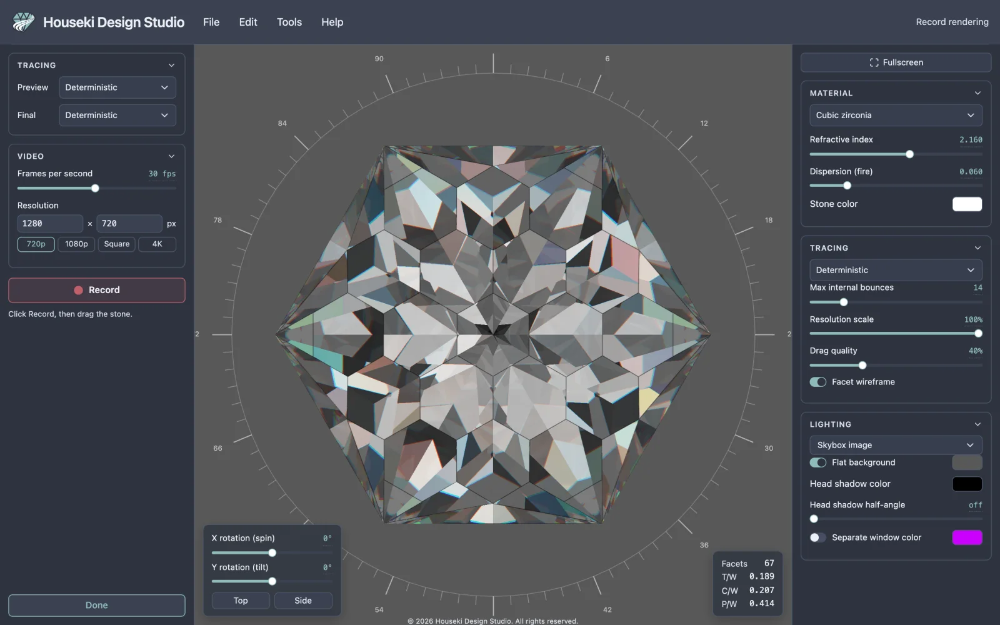
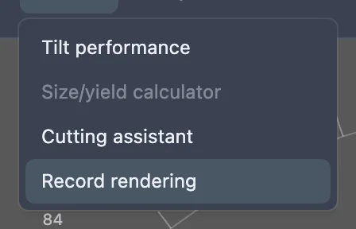
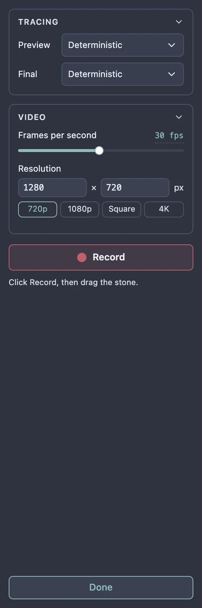
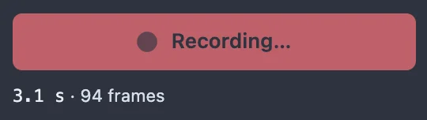
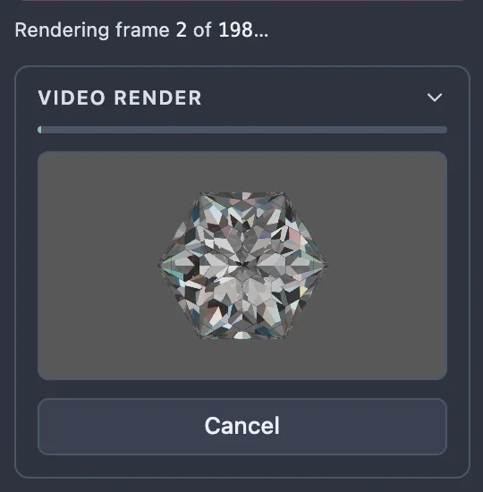
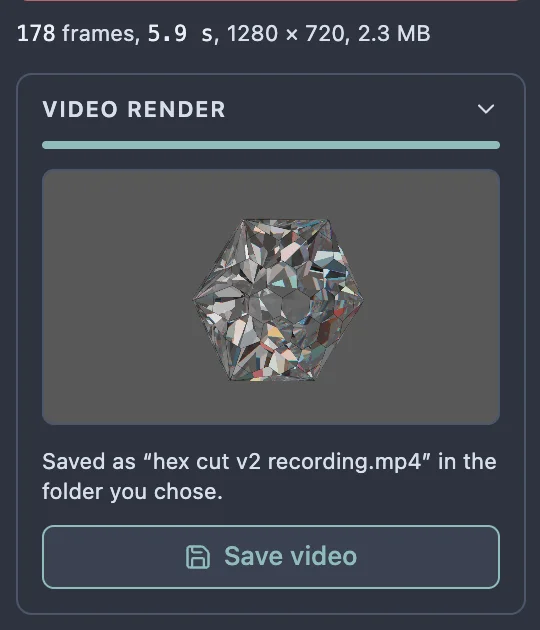

A still render only shows a stone from one angle. Record rendering turns it into a video: you drag the stone once along the path you want, drawn with a fast renderer so it keeps up with the mouse, and the studio then renders every moment of that drag again at full quality, at the size and frame rate you choose, and saves it as an MP4 video you can share.

Choose Tools > Record rendering. It works on any stone, whether a design you opened or a plain .obj model. It is greyed out while another mode, such as editing a tier, is open; its tooltip then says which one to finish first. While it is open, the top bar's mode readout says Record rendering.


The Tracing card has two renderer pickers:
| Picker | What it is for |
|---|---|
| Preview | The renderer the stone is drawn with while you drag it, and while the mode is open. Pick a fast one, such as Deterministic, so the stone keeps up with the mouse. While the mode is open, the renderer picker in the render settings on the right is this same setting. |
| Final | The renderer every frame of the video is drawn with. The first time you open the mode it is the renderer you were using. |
The Video card sets the video itself:
The video is always the size you set here, whatever the size of your window or screen. The stone fills the same share of the picture's height as it does of the render in the middle, at the zoom you have when you let go.
These settings are remembered the next time you open the studio. The render settings on the right (material, lighting, bounces and the rest) are what the video is rendered with.

The video plays back at the speed you moved: a frame is taken every 1/30 of a second (or whatever frame rate you set) from the moment you press to the moment you let go, each showing the stone as it was on screen at that moment, so pauses in the drag are pauses in the video. A click that does not move the stone records nothing, and the recorder stays armed.

Once you let go, each frame is rendered again with the Final renderer at the video's size. The Video render card shows a bar that fills as the frames are finished and a small picture of the last one, and the line above says which frame is being rendered. The stone in the middle and the render settings are held still while it runs, so nothing can change the video half way through; the rest of the studio stays responsive.
A Deterministic or Flat video renders a frame in a small fraction of a second. A Monte Carlo frame gathers the Samples to accumulate set in the render settings, the same amount the render in the middle gathers before it stops improving, so each frame takes as long as that render takes to clear. Lower Samples to accumulate for a quicker, grainier video. The Tracing card says how many samples each frame gathers when Final is Monte Carlo.
Click Cancel, or press Esc, to stop rendering. Nothing is saved, and you can record again straight away.
When the last frame is done, the studio finishes the MP4 and offers to save it. Where your browser has a Save As dialog for web pages (Chrome, Edge), you choose the folder and name there. Those browsers only open that dialog right after a click, which a long render has outlasted, so the card usually reads "The video is ready" and the dialog opens when you click Save video. The dialog starts in your Downloads folder; look at the folder it shows before you click Save. Other browsers save it to your downloads folder. The file is named after the design, for example Hex Cut V2 recording.mp4.
The line above Save video says what happened: the name the video was saved under, or that it was downloaded. If you close the dialog without saving, it says the video was not saved. If the browser cannot write the file where you chose, it says so in red, with the reason. In either case click Save video to try again; the video is kept until you record again or click Done.

The video is H.264 in an MP4 file, which plays in every common video player, in browsers and on phones. Record again starts a new recording with the same settings.
Making the MP4 needs a browser that can encode H.264 video for web pages itself. Chrome and Edge can; other browsers may or may not, depending on the browser and the computer, and the pane checks as it opens. In a browser that cannot, the pane says so under the settings and the Record button stays greyed out. A size too large for your browser's encoder is reported the same way; pick a smaller one.
Click Done at the bottom of the pane. Esc steps back one thing at a time: it cancels a video being rendered, drops a recording you are making, disarms the Record button, and, with none of those going on, closes the mode. The cutting instructions come back, with the renderer and the view you had before you opened it. Nothing in the design changes, so Undo and Redo do nothing while the mode is open, and the design cannot be edited until it is closed. If you switch to fullscreen while it is open, the pane is hidden with the cutting instructions; the first Esc then leaves fullscreen.